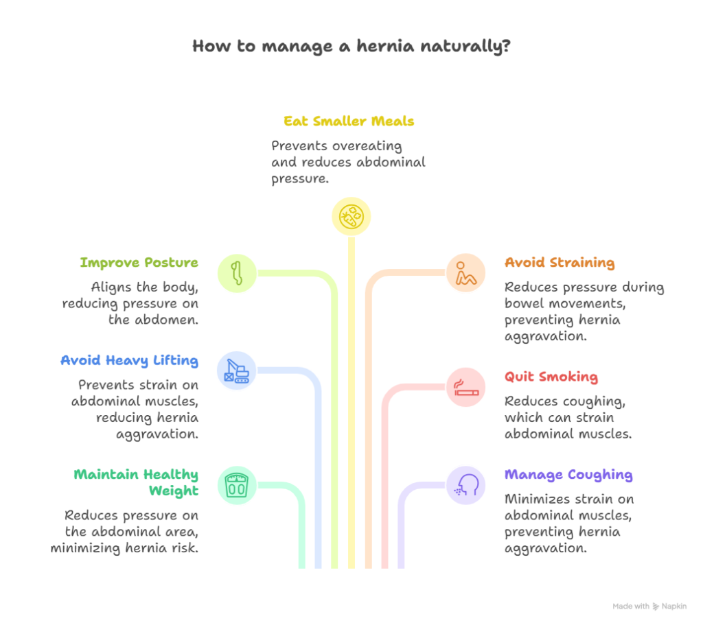
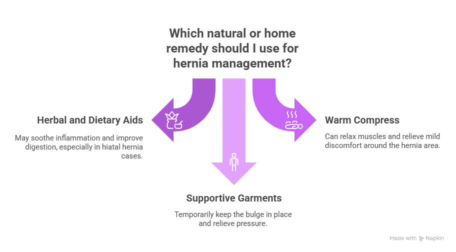
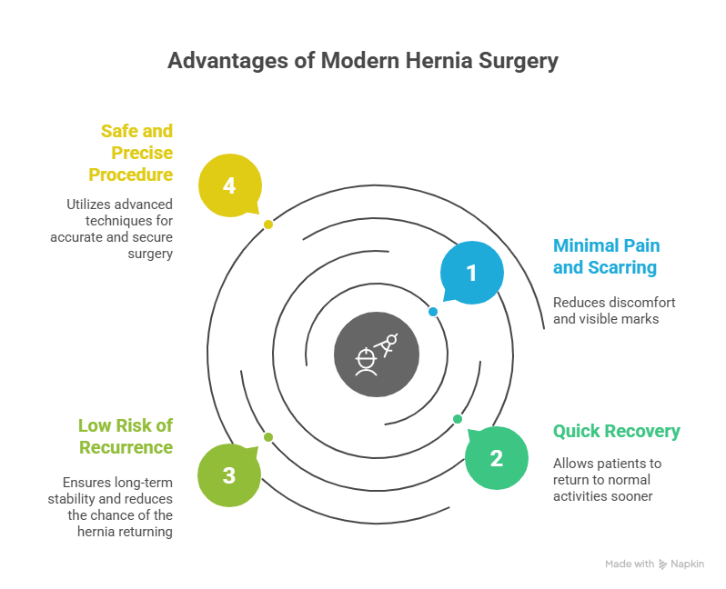

A hernia is a common medical condition that happens when an internal organ or tissue pushes through a weak spot in the muscle or surrounding wall. While surgery is often recommended as the most effective and permanent treatment for a hernia, many people wonder — how to cure hernia without surgery, or if it’s even possible to manage the condition naturally.
In this article, we’ll discuss whether hernia can be cured without surgery, what lifestyle changes or treatments may help, and when medical attention is necessary. The content is designed to help you understand your options in simple, easy-to-follow language.
How to Cure Hernia Without Surgery?
“Many people wonder — how to cure hernia without surgery, or if it’s even possible to manage the condition naturally.”
Book Your Appointment TodayUnderstanding Hernia
A hernia occurs when part of an organ (usually the intestine) bulges through a weak spot in the muscle or tissue. It can develop in several parts of the body, most commonly:
- Inguinal hernia (groin area – most common in men)
- Umbilical hernia (near the belly button)
- Hiatal hernia (upper stomach area, where the stomach pushes through the diaphragm)
- Incisional hernia (at the site of a previous surgery)
- Femoral hernia (upper thigh, near the groin)
A hernia may appear as a lump or bulge that becomes more visible when you cough, lift something heavy, or strain your abdomen.
Can Hernia Be Cured Without Surgery?
Many people ask, “can hernia be cured without surgery?” The honest answer is — a hernia cannot be completely cured without surgery. Once a hernia develops, the weakened area in your muscle wall does not heal on its own. However, it is possible to manage symptoms, prevent worsening, and live comfortably for a period of time through lifestyle modifications, exercises, and medical management — especially if the hernia is small and not causing severe symptoms.
So, while it is not possible to cure hernia without surgery permanently, there are ways to control pain, reduce strain, and prevent complications until surgery becomes necessary or advisable.
Why Surgery is the Only Permanent Cure
Hernia surgery (known as herniorrhaphy or hernia repair) is the only way to fix the weakened muscle wall that allows the hernia to occur. During surgery, the surgeon pushes the protruding organ or tissue back into place and reinforces the weak spot with stitches or a mesh.
Modern advancements such as laparoscopic hernia surgery make the procedure minimally invasive, safe, and highly effective. Experts like Dr. Atul Peter’s, known as the Best Hernia Surgeon in Delhi, perform these surgeries with precision and minimal downtime, allowing patients to recover quickly.
That said, if you’re not yet ready for surgery or your doctor advises waiting, here’s how you can safely manage a hernia without surgery.
Lifestyle Changes to Manage a Hernia Naturally

While surgery is the definitive treatment, certain lifestyle changes can help reduce symptoms and prevent the hernia from worsening.
1. Maintain a Healthy Weight
Excess body weight increases pressure on your abdominal wall, which can make a hernia worse. Losing even a small amount of weight can help relieve this pressure. Focus on a balanced diet rich in vegetables, fruits, and lean proteins. Avoid fried and fatty foods that can cause bloating or constipation.
2. Avoid Heavy Lifting
Lifting heavy objects can strain the abdomen and worsen your hernia. If lifting is unavoidable, learn to lift properly — bend your knees, not your waist, and use your legs to lift instead of your back or stomach muscles.
3. Improve Your Posture
Poor posture, especially while sitting for long hours, can put stress on the abdominal area. Sit upright, support your lower back, and avoid slouching to reduce strain.
4. Eat Smaller, More Frequent Meals
For patients with hiatal or umbilical hernia, large meals can increase stomach pressure and worsen symptoms. Eating smaller meals more often can help manage discomfort.
5. Avoid Straining During Bowel Movements
Constipation and straining can put pressure on your abdomen, aggravating your hernia. Increase fiber intake (from fruits, vegetables, and whole grains) and drink plenty of water to keep bowel movements regular.
6. Quit Smoking
Smoking not only weakens connective tissue but also causes chronic coughing — both of which can make hernias worse. Quitting smoking can help reduce these risks significantly.
7. Manage Coughing or Sneezing
If you have a chronic cough or allergy, seek medical treatment. Repeated coughing and sneezing increase abdominal pressure and can enlarge a hernia.
Exercises That Can Help Manage Hernia Symptoms
Gentle, low-impact exercises can strengthen the abdominal muscles and improve support around the hernia. However, avoid intense abdominal workouts or weightlifting, as these can worsen the hernia. Always consult your doctor before starting any exercise routine.
Here are some exercises that may help:
1. Deep Breathing Exercise
Lie flat on your back, take deep breaths into your belly, and exhale slowly. This strengthens the diaphragm and improves blood flow to the abdominal muscles.
2. Pelvic Tilt
Lie on your back with knees bent and feet flat on the floor. Tighten your abdominal muscles and tilt your pelvis slightly upward, holding for a few seconds before relaxing. Repeat 10–15 times.
3. Heel Slides
Lie down on your back, knees bent. Slowly slide one heel away from your body while keeping your abdominal muscles tight. Return to the starting position and switch legs.
4. Yoga Poses
Gentle yoga poses such as Tadasana (Mountain Pose), Setu Bandhasana (Bridge Pose), and Vrikshasana (Tree Pose) can improve posture, strengthen the core, and enhance muscle support.
Natural and Home Remedies for Hernia Management

While home remedies can’t fix a hernia, they can ease symptoms like heartburn, bloating, and pain.
1. Herbal and Dietary Aids
- Aloe Vera Juice: May help soothe inflammation and improve digestion, especially in hiatal hernia cases.
- Ginger and Licorice Root: Help relieve acid reflux and stomach irritation.
- Apple Cider Vinegar (diluted): Can help balance stomach acid levels in some people.
2. Warm Compress
Applying a warm compress can help relax muscles and relieve mild discomfort around the hernia area.
3. Supportive Garments
A hernia belt or truss can temporarily keep the bulge in place and relieve pressure. However, this is not a cure, and long-term use without surgical consultation is not recommended.
What Happens If a Hernia Is Left Untreated?
Ignoring a hernia can lead to serious complications. If the bulging tissue becomes trapped (a condition called incarcerated hernia) or the blood supply is cut off (strangulated hernia), it can cause severe pain, nausea, and even life-threatening situations requiring emergency surgery.
That’s why even if you’re managing your hernia conservatively, regular medical checkups are important.
When to See a Doctor
You should see your doctor or a specialist such as Dr. Atul Peter’s, one of the best Hernia surgeons, if you experience:
- Increasing pain or swelling at the hernia site
- Nausea, vomiting, or bloating
- Redness or tenderness around the bulge
- The bulge becomes hard or does not go back in when you lie down
- Difficulty passing stool or gas
These symptoms could indicate a complication that needs urgent medical care.
Medical Management (Non-Surgical Options)
In certain cases, doctors may recommend non-surgical management before or instead of surgery:
- Observation: For small, painless hernias that aren’t causing symptoms, the doctor may advise regular monitoring.
- Medication: For a hiatal hernia, medications that reduce acid reflux (like proton pump inhibitors) can help control symptoms.
- Lifestyle Counseling: Doctors often suggest weight management, diet adjustments, and activity modifications to reduce hernia-related discomfort.
While these approaches can control symptoms, they cannot repair the underlying muscle weakness — meaning surgery is still the ultimate treatment when needed.
Benefits of Modern Hernia Surgery

If your hernia becomes painful or enlarges over time, surgery offers a safe and permanent solution. Laparoscopic surgery, in particular, has many benefits:
- Minimal pain and scarring
- Quick recovery (usually within 1–2 weeks)
- Very low risk of recurrence
- Safe and precise procedure
Patients treated by Dr. Atul Peter’s, known for performing some of the Best Hernia Surgery in Delhi, often experience smooth recovery and long-term relief.
Precautions to Prevent Hernia from Worsening
If you’re managing your hernia without surgery, follow these precautions:
- Avoid straining during bowel movements.
- Don’t lift heavy objects or perform intense exercises.
- Wear loose, comfortable clothing to avoid abdominal pressure.
- Maintain a healthy weight and active lifestyle.
- Eat a fiber-rich diet to prevent constipation.
- Sleep with your head elevated (for hiatal hernia) to reduce symptoms of reflux.
These steps can help you live more comfortably while delaying the need for surgery.
How to Cure Hernia Without Surgery?
“Many people wonder — how to cure hernia without surgery, or if it’s even possible to manage the condition naturally.”
Book Your Appointment TodayConclusion
So, is it possible to cure hernia without surgery? The truth is- no, a hernia cannot be permanently cured without surgery. However, with proper lifestyle changes, dietary control, exercise, and medical supervision, you can manage symptoms and prevent complications effectively.
If your hernia causes pain, grows larger, or starts affecting your daily activities, consulting a specialist is crucial. Dr. Atul Peter’s, widely regarded as one of the best Hernia surgeons, offers advanced and minimally invasive hernia treatments that ensure safe recovery and long-term relief.
Remember, the goal is not only to treat the hernia but also to restore your quality of life safely.
Frequently Asked Questions
Is it possible to cure Hernia without surgery?
Can a small Hernia go away on its own?
What can I do to reduce Hernia pain naturally?
How can I prevent my Hernia from worsening?
Can lifestyle changes help avoid surgery?
What foods should I eat if I have a Hernia?
Recommended Further Reading
Have Personal Health Questions?
Consult with Dr. Atul Peters and our expert multidisciplinary team at Max Smart Super Speciality Hospital, Saket, New Delhi.
Book Your Consultation